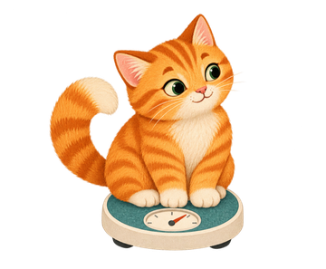

A private, on-device care journal for the time between one vet visit and the next. Your vet's plan, honest daily notes with photos, weights over time, and one clear visit brief to share.
Pay once, use forever. No subscription, no ads, no account.Each note is similar to usual, changed, or not observed. A day with no note stays blank. Not observed is never turned into fine.
Tap what you noticed, add a short note or photo, done. A seven-day care trail shows the week at a glance.
One visit brief with the plan, your observations, weights, photos and questions. Share as text or PDF when you choose.
Everything a careful owner needs between visits. Nothing that pretends to be a vet.

No. It keeps your own observations organised and honest so you can tell your vet what actually happened. Contact a veterinarian for any medical concern.
On your device only. There is no account and no server of ours. Export a backup before changing phones or uninstalling.
No. Pay once, use forever. No in-app purchases and no ads.
English and Thai, with more languages included in the app.